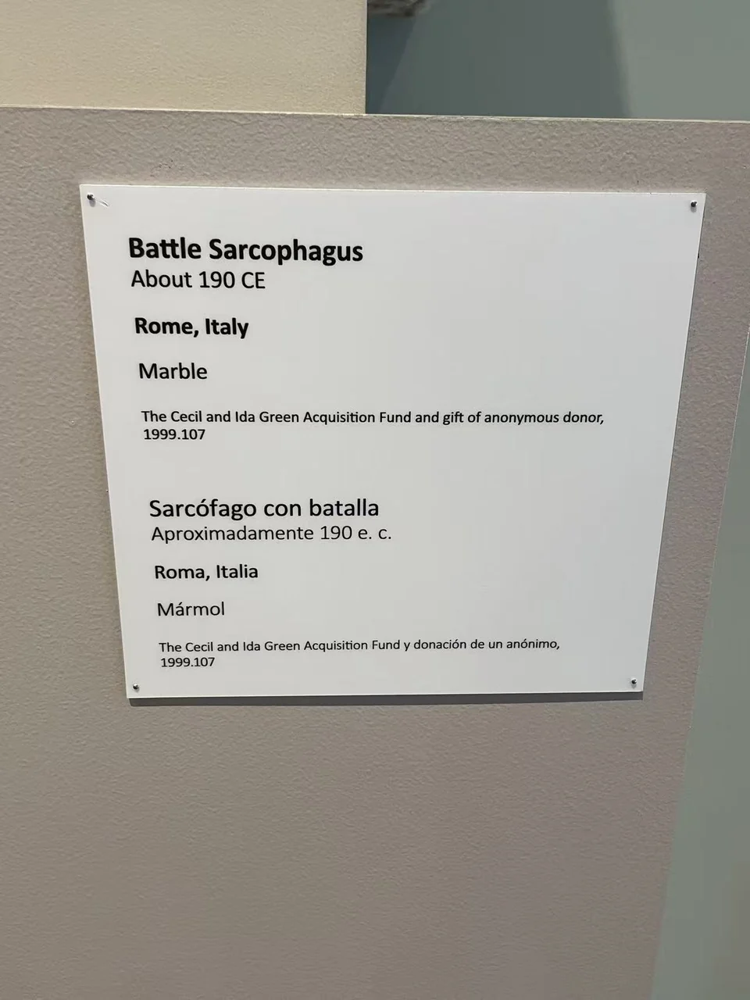

ROMAN SARCOPHAGI / R14
战争石棺
战士、马匹与倒伏的身体互相缠绕，胜负通过姿态的高低展开。

- 年代
- 约190年
- 材料
- 大理石
- 收藏
- 达拉斯艺术博物馆
- 观看地点
- 达拉斯艺术博物馆 · 达拉斯
- 馆藏号
- 1999.107
交错身体中的方向
横长的棺身内，抬起的手臂、倾斜的盾和弯折的马腿不断改变观看方向。地面倒伏者压低画面重心，两端战利品与受制人物又收住混战。先分辨骑乘、站立与倒下的身体，比急于为每个人命名更容易读出结构。
借用英雄式战争图像
达拉斯馆方说明把这件作品联系到罗马将军的纪念，并提出帕加马战胜凯尔特人的希腊图像传统可能是其前例。它讨论的是构图与理想身份的延续；具体将军与战役仍未确认，不能将浮雕当作一场战争的现场记录。 [20]
现场展签 · 1张

资料与来源
断代、收藏与文献说明
约190年、大理石及尺寸据馆方供稿页面；1999.107据现场展牌1933。 [20]